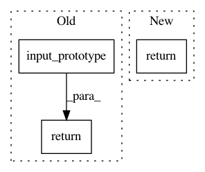

ea7c3f3ecce96dc852329a405d802c4d6f0be564,reagent/prediction/predictor_wrapper.py,DiscreteDqnWithPreprocessor,input_prototype,#DiscreteDqnWithPreprocessor#,46
Before Change
return q_values
def input_prototype(self):
return (self.state_preprocessor.input_prototype(),)
class DiscreteDqnWithPreprocessorWithIdList(ModelBase):
After Change
return q_values
def input_prototype(self):
return sparse_input_prototype(
model=self.model,
state_preprocessor=self.state_preprocessor,
state_feature_config=self.state_feature_config,
)
class DiscreteDqnPredictorWrapper(torch.jit.ScriptModule):
def __init__(
In pattern: SUPERPATTERN
Frequency: 3
Non-data size: 3
Instances
Project Name: facebookresearch/Horizon
Commit Name: ea7c3f3ecce96dc852329a405d802c4d6f0be564
Time: 2020-07-03
Author: kaiwenw@fb.com
File Name: reagent/prediction/predictor_wrapper.py
Class Name: DiscreteDqnWithPreprocessor
Method Name: input_prototype
Project Name: facebookresearch/Horizon
Commit Name: b9b54d4f30ff65cf1c54dc0cf90c938b48c44f90
Time: 2020-04-28
Author: kittipat@fb.com
File Name: reagent/models/dqn.py
Class Name: _DistributedDataParallelFullyConnectedDQN
Method Name: input_prototype
Project Name: facebookresearch/Horizon
Commit Name: 313b8fb78f17c527f34baad92f394394d2fb1ccf
Time: 2021-01-09
Author: czxttkl@fb.com
File Name: reagent/prediction/predictor_wrapper.py
Class Name: Seq2SlateWithPreprocessor
Method Name: input_prototype